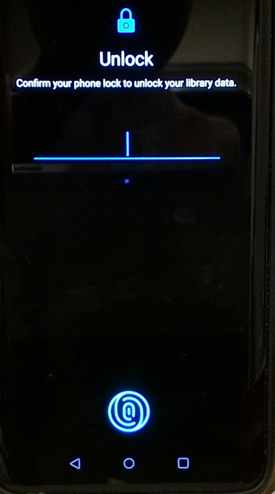
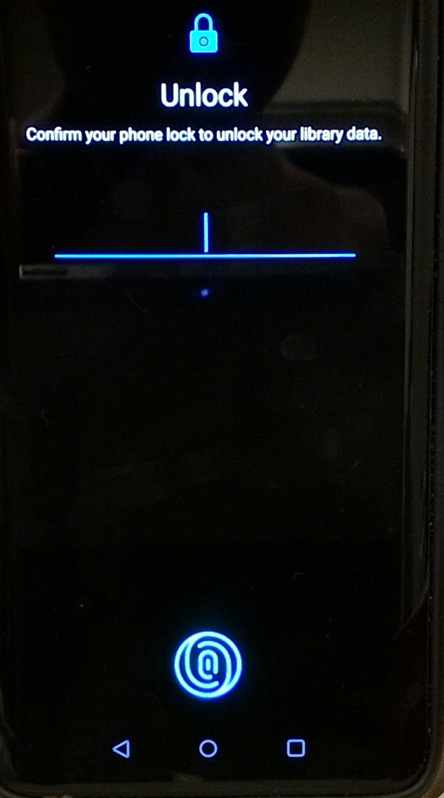

It looks like you've found the home of the unofficial Library Card app! Designed, tested, and used by me, Kendell, I would reccommend it! But before you get it, there are some important things to go over.
First, liability. When you use the Library Card app, the chances actually decrease that somebody could steal the library card PIN! Why? Well, it's easy for somebody to see what you press on the keyboard, but it's harder for somebody to get their phones barcode scanner out and only scan the bottom one. Wait a minute... Oops! I need to show you some screenshots.

 

If you look at the center screenshot, hopefully you can tell what I mean. It's easier for somebody to look at your fingers than to scan just the second barcode. In order to make things easier for everyone, though, by installing the Library Card app you agree that I, Kendell, is not liable for any fines or damage due to using the Library Card app. I still will help you in the unlikely scenario that this happens, though!
The screenshots probably were clear enough to get you to understand Liability, but I still need to fully explain to you its functions.